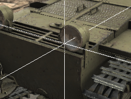
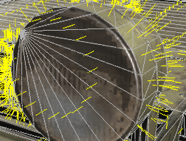
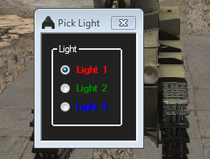
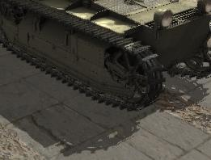

Moving around in Tank Exporter:
Short Cut Keys
F1 : Help
F2 : Show light positions
F3 : Orbit Light 1 about tank
F5 : Show/Hide tracks
F6 : Show/Hide hull
F7 : Show/Hide turret
F8 : Show/Hide Gun
F12 : Open Screen Capture Panel
B : Cycle through BackGrounds
C : Center on selected triangle in Texture Viewer
F : Show the tanks folder in File Explorer
H : Help (These HTML pages.
Home Key : Reset the view window
I : Import FBX
<Shift> + I : Import Primitives FBX
L : Open Lighting panel
M : Show Track Bendbone Markers
N : Cycle through Vertex Normal Display (Off, By Face, By Vertex)
T : Show Hide Textures on the model (If it has them)
U : Show/Hide UVs in Texture View Window
V : Open Hide/Show Each Model Part panel
W : Display Wire Edges on models
X : Export FBX
Press the left mouse button to orbit the look at point.
To zoom in and out, press the right mouse button.
To move the look at point in X Z, press the middle mouse button.
Also you can move the look at point by pressing SHIFT and left mouse buttons at the same time.
To move the look at point Up and Down, press CTRL and the left mouse buttons at the same time.
|  | Pressing SHIFT or CTRL always shows the center cross hair. This is the point you are looking at. |
|  | Pressing N will show the surface normals.. There are 3 view modes.. Off / By Face / By Vertex. In this image, show edges has been turned on. |
|  |  |
Pressing F2 will show or hide the 3 light positions in the scene. The RED colored ball is the light that orbits when you press F3. If you turn on shadows under File/Settings, there is also a setting for which light will be used to calculate the shadows. Information on how shadow mapping works. The method I use is "Variance" |